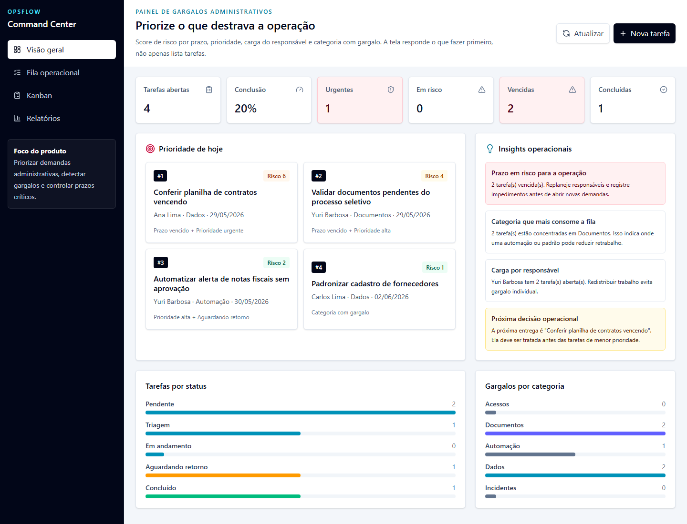

Problema real
Backoffice costuma depender de planilhas, mensagens soltas e cobranças manuais para controlar documentos, contratos, acessos e aprovações.
Estudo de caso full stack
Central de Operações e SLA para transformar rotinas administrativas em uma fila priorizada por prazo, responsável, categoria, risco operacional e histórico de decisão.

Backoffice costuma depender de planilhas, mensagens soltas e cobranças manuais para controlar documentos, contratos, acessos e aprovações.
O sistema calcula score de risco com base em prazo, prioridade, carga por responsável, categoria com gargalo e tarefas aguardando retorno.
O repositório mostra TypeScript, API REST, SQLite, auditoria, Zod, testes automatizados, Playwright E2E, CI, CodeQL e documentação técnica.
Contexto
Em vez de ser apenas uma lista de tarefas, o OpsFlow foi desenhado para apoiar decisão: o que está vencido, quem está sobrecarregado, qual categoria está travando o fluxo, qual demanda precisa ser resolvida primeiro e quais decisões já foram registradas.
Arquitetura
A estrutura em monorepo mantém web, API e regras de domínio no mesmo fluxo de qualidade. Isso reduz duplicação, facilita testes e deixa a regra de risco e os contratos de auditoria reaproveitáveis.
Decisões
Facilita a avaliação local e mantém persistência real de tarefas e eventos sem depender de configuração pesada.
GitHub Pages reduz atrito: o avaliador abre o produto imediatamente, enquanto a API local continua documentada para análise técnica.
A prioridade deixa de ser subjetiva e cada mudança importante fica registrada em uma timeline explicável durante entrevista técnica.